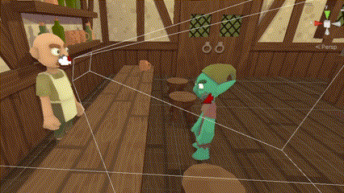

Tavern Swap!
Unity, C#
A 3D dialogue driven game where you choose your own adventure and swap between characters as you do so. This game was made in 48 hours for the GMTK 2023 jam on a team with two other people (an artist and musician).
I was in charge of building/programming the whole game in engine using the assets that my team members created, as well as designing and writing the narrative encounters.
- Camera Direction:
The camera switch was one of the most important mechanics of the game and was a lot of fun to program. It works by having two preplaced cameras, one on the bartender and one on the guest. When it was time to switch who the camera would face, you would just need to change the priority of the two cameras on a global CameraManager, and Unity's Cinemachine camera package would handle the rest. It ended up looking pretty smooth, but got a little confusing at times due to working with a somewhat complex tool in Cinemachine. If I were to do it again a bit more simply, I would default to one camera and switch where it looked based on its path during a linear interpolation (lerp).

- Misc. Notes:
This project was my first time working with someone actually in the games industry. Our artist (who I met randomly on GMTK's team finder), worked at a mid-level studio as a 3D environment artist for mobile games. It was a really cool experience and it was super nice of her to leave this message-
.png)
.png)
.png)
.png)